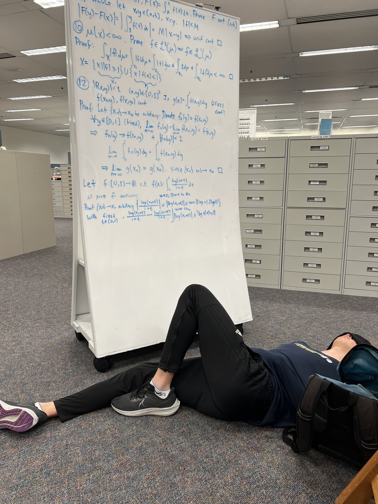

|
Blog Post
Date posted: July 07, 2024
Week 2 of Summer Session 1 2024, Sunday
Guess who's back? So for the past few weeks I did some cool stuff.
|
 |
Post-finals burnout (June 15th - June 26th):
Quarter ended, but there were still things to do. I did not sleep early.
On the Saturday, I woke up early to help D.W. and H.P. move out stuff. I got paid in free food.
I went to the beach with some friends and just ended up sleeping on the beach for most of the time I was there. Then ate food.
I like to beach for the fresh air, not for the beach part. Came back, and I'm living with D.W. for a few days.
On Sunday, wake up early again to attend my friend's graduation. I think I wrote some emails and planned out the next two weeks.
On Monday, I got KBBQ and went karaoke. Ate well, had fun.
My friend was supposed to drive me back on Tuesday morning, but he had some stuff to figure out.
On Tuesday, it was D.W. first day of work. I got to sleep in that day.
I didn't go out. Stayed inside and planned out the rest of the summer
Wednesday morning, departed SD and died for most of the ride.
Stopped at a Costco and ate the chocolate chip cookie for the first time. Absolutely amazing.
Then ate dosas, basically Indian fried pancakes. Pretty good. Would try again.
Came home, then immediately went to Philz Coffee to study. K.C. is there. Talk a little about optimization problems.
Start on differential geometry. Friend's dad takes me to Costco. Get chicken bake. Friend grills a burger for me.
Burger is amazing. Walk home, and he bikes next to me. Talk about stuff.
The next few days were the same. Sleep at 1 AM. Wake up at 11 AM. Get lunch with an old friend.
Go to Philz/public library. Study for 6-7 hours. Get dinner. Come home. Until the next Thursday.
I'm glad most of my friends are doing well. Most of them have their stuff together, and they are growing as people.
It makes me very happy. Also I got a lot of differential geometry and topology problems done.
I stayed home on the 26th because I wanted to spend time with my family.
<- this is a picture of me taking a break from studying for MATH 140C on Tuesday morning after being awake for 40 hours.
|
At this point in time, I had some deep thoughts and talks with people. I really need to reevaluate how I view others.
I like to say that I try my best to give people the benefit of the doubt.
So far, I've been doing a good job of not hating on others too easily. This is good.
No human is inherently evil, but definitely inherently lazy. Engrained into my brain. Good.
But the main issue is that I hold my friends at a high standard. Can I criticize my friends for being human?
And another question is that why does it bother me in the first place? Well, it's natural to want the best for others.
Given this, if I see my friend lying in bed for two hours scrolling through IG/TikTok or whatever, then I would feel sad.
More specifically, I experienced severe disappointment first-hand in that specific week.
How. Two. Hours. I'm going to give the quote of the blog earlier this time.
“Be the person and human that you want to see in your own child.” - Me
I want people to consciously realize how pathetic they look when they scroll through social media for long periods of time.
I will say it again. It's pathetic. Fix yourself. If you are reading this, and you are one of those people, you have issues.
I've never felt such disappointment in my life. Sure, people can skip lectures and fail classes.
People can have their weak moments in the presence of temptation.
At least they consciously know that they are committing an act of weakness. But doomscrolling is the lowest form of being weak.
Social media is the most marginal gain in dopamine for a crippling addiction. People know this too.
Yet their excuse is “I need to text people” or whatever. Then give them your phone number or alternative form of contact.
You aren't a celebrity. You don't wake up to dozens of DMs. Of course, I don't tell this to people directly, but I will now.
I will start telling people that their current state looks sad. Hopefully they realize the errors in their ways.
Furthermore, I got recently told that I care too much for others. Yes, I probably lost a few years off my lifespan
for staying up on finals week. Did I have to stay up? No. However, I felt the duty to help my friends study for MATH 10B/20E.
Why? No one told me to, and I had free will to say no. I guess this is my way to thanking someone for being my friend?
|
|
Turning point (June 27th):
I sleep at 2 AM after packing. I wake up at 4 AM. My mom drives me to the airport.
I only got to see her for 4 days since she flew in from Korea last week.
Flight to SD is alright. I public transport my way back to my apartment. There is a control theory seminar at 12:30 AM.
I'm tired. It's okay. I chug the two leftover ProBallers and do more differential geometry. I head to the seminar. Free pizza.
One of the new roommates move in the next day. I buy cleaning supplies from Target.
I come back. I watch one YouTube video. My friend's parents made dinner. I eat then directly go to the gym for a pull day.
I began deep-cleaning at 7 PM. One roommate is packing up all of his stuff to move out. Seems busy.
I deep clean the restroom. Other roommate walks in at around 8 PM. Gets on his bed. Gets on his phone.
I am cleaning. I hand-wash the bathroom mats and the shower curtain. They are nasty and haven't been washed in a year.
Roommate in living room still on his phone while sitting on his bed.
It's 9 PM. Cleaning the bathroom counter. Even more nasty. Roommate throws his laundry in washer. Gets on his phone.
I need to throw the handwashed bathroom in the washer, but whatever.
It's 10 PM. I'm cleaning the kitchen.
11 PM, packing roommate leaves. Other roomamte hasn't budged.
4 hours passed, and all this guy did was do his own laundry and sit on his bed while .
The washing machine rattled, so I furrow my eyebrows at roommate with concern.
This was the opportunity. I tell him everything.
|
I got told that this was very cruel of me to say. I agree. It is. But sometimes, people need to hear the truth.
This isn't some “truth hurts” bullshit.
|